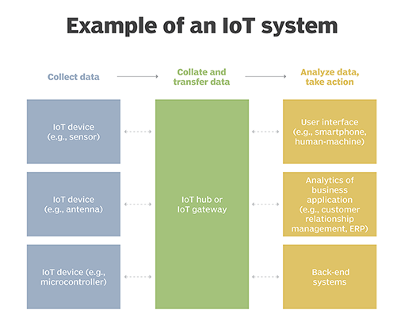

Internet of Things (IoT) is the networking of physical objects that contain electronics embedded within their architecture in order to communicate and sense interactions amongst each other or with respect to the external environment. In the upcoming years, IoT-based technology will offer advanced levels of services and practically change the way people lead their daily lives. Advancements in medicine, power, gene therapies, agriculture, smart cities, and smart homes are just a very few of the categorical examples where IoT is strongly established. Over 9 billion ‘Things’ (physical objects) are currently connected to the Internet, as of now. In the near future, this number is expected to rise to a whopping 20 billion. There are four main components used in IoT:
An IoT ecosystem contains web-enabled smart devices that use embedded systems, such as processors, sensors and communication hardware, to collect, send and act on data they need from their environments. IoT devices share the sensor data they collect by connecting to an IoT gateway or other edge device where data is either sent to the cloud to be analyzed or analyzed locally. Sometimes, these devices communicate with other related devices and act on the information they get from one another. The devices do most of the work without human intervention, although people can interact with the devices -- for instance, to set them up, give them instructions or access the data. The connectivity, networking and communication protocols used with these web-enabled devices largely rely on the specific IoT applications deployed. IoT can also make use of artificial intelligence (AI) and machine learning to aid in making data collecting processes easy and more dynamic.
The internet of things offers many benefits to organizations. Some benefits are industry-specific, and some are applicable across multiple industries. Some of the common benefits of IoT enable businesses to: